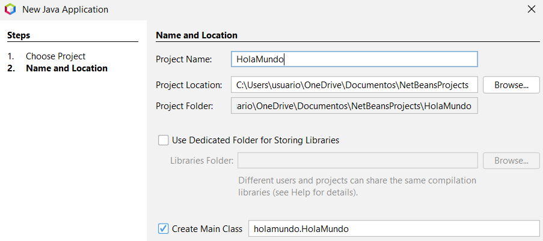

Paso 1
Lo primero que tenemos que hacer es instalar java
Paso 2
nos aparecen los SO donde lo queremos instalar linux, windwos etc...
Paso 3
Aqui vemos para que lo queremos instalar en nuestro caso para Windows y el instalador x64 Installer
Paso 4
Una vez cliquemos en descargar nos aparecera el archivo descargandose
Paso 5
A continuación instalaremos en apache neatbenas. Para ello nos vamos al buscador y nos vamos a su pagina
Paso 6
Instalamos el apache mas actualizado en nuestro caso
Paso 7
Clicamos en el que nos aparece en la imagen.
Paso 8
Aqui nos aparecen los dos archivos descargados
Paso 9
Abrimos el archivo de descarga apache.
Paso 10
Y configuramos el instalador.
Paso 11
Seleccionamos la carpeta destino
Paso 12
Y ya pondremos a instalar la aplicación
Paso 13
Una vez instalado lo abrimos y nos vamps a el apartado de neatbeans y a instalar plugins y instalamos el java SE
Paso 15
Ahora nos vamos a File, new project
Paso 16
elegimos el proyecto java with ant, Java application que es el basico para empezar a programar.

Paso 17
Ponemos nombre al proyecto y seleccionamos carpera destino
Paso 18
Y como vemos en la parte izquierda nos aparece el proyecto creado con el nombre HolaMundo que es el que le hemos puesto
Paso 19
Ya seria poner codigo en nuestro caso hemos hecho un sout que ponga hola mundo, y para ejecutarlo le damos a click derecho sobre
el nombre del proyecto y ejecutar. Hay mas opciones de ejecutar como dandole a la flechita verde que aparece arriba o con Control F6
INICIO